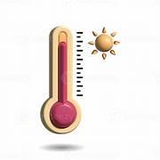

Welcome to the Professional Converter
Quickly convert temperatures with precision. Ideal for students, engineers, and scientists. Check units carefully before converting and enjoy accurate results every time!
Our converter also provides quick tips to ensure your inputs are accurate. Hover over the card for a smooth 3D effect and see instant results in all units.

Tips & Info
- Enter valid numeric temperature values only.
- Decimal numbers are accepted.
- Conversion is accurate up to 2 decimal places.
- Units are case-insensitive and clear in dropdown.
- Hover over the card to see a 3D effect.
- Always double-check the unit selection before converting.
- Kelvin input must be above 0 K (absolute zero) for realistic conversions.
- Use the converter for educational, professional, or personal needs.